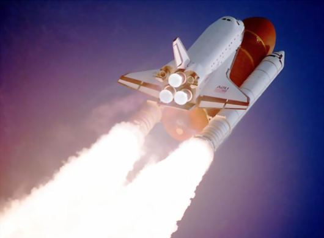
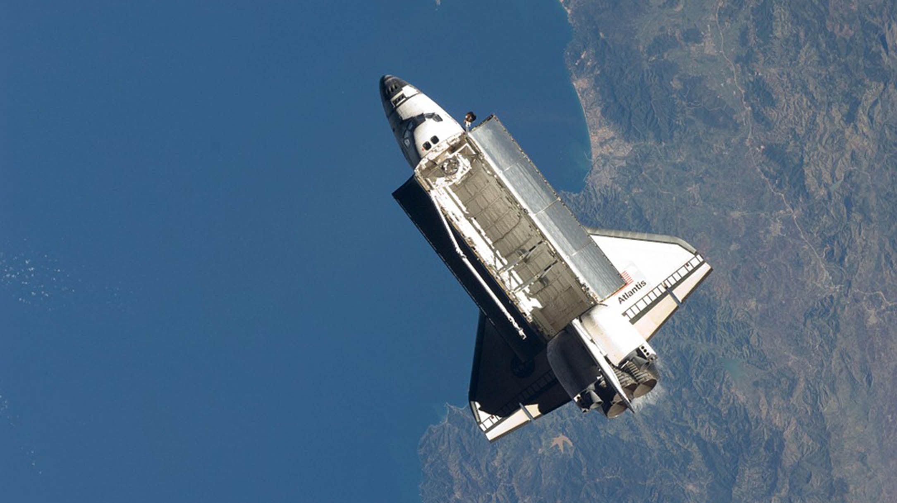

La ingeniería aeroespacial es una rama de la ingeniería que estudia las aeronaves; engloba a los ámbitos de la actual ingeniería aeronáutica, relacionada con el diseño de sistemas que vuelan en la atmósfera, y de la ingeniería astronáutica, entendiendo por esta última aquella que se ocupa del diseño de los vehículos impulsores y de los artefactos que serán colocados en el espacio exterior.
Ingeniería aeroespacial, es un programa académico que confiere formación integral y competente para que sus egresados sean capaces de mostrar un alto desempeño en las áreas de Ingeniería de materiales, mecánica, dinámica orbital y el diseño para aplicaciones para el campo de la modelación. Aerodinámica y aeroestructuras para cubrir necesidades de la industria aeroespacial así como para la industria del soporte técnico relacionada con este campo de conocimientos. Además de poseer los dominios conceptuales, procedimentales y actitudinales que les permite enfrentar los retos propios de la dinámica social, económica, política, tecnológica y ambiental.

Perfil de egreso
El Ingeniero Aeroespacial sera capaz de analizar, diseñar, desarrollar y poner a prueba los sistemas que se emplean en el espacio terrestre, de la atmósfera y fuera de ella.
Además estarán preparados para aplicaciones en las ciencias de la ingeniería, matemática, métodos computacionales, métodos experimentales modernos y en principios de ingeniería en sistemas para la resolución de problemas a nivel industrial.
Investigación y desarrollo de tecnología

Plan de estudios
Primer Semestre
Cálculo Diferencial e Integral
Física
Laboratorio de Física
Álgebra Superior
Dibujo
Sociedad y Cultura
Tecnología y Manejo de la Información
Ingles III
Segundo Semestre
Cálculo Aplicado
Química General
Laboratorio de Química General
Álgebra Lineal
Introduccion al Desarrollo Economico
Universidad y Conocimiento
Lenguaje y Comunicacion
Ingles IV
Tercer Semestre
Ecuaciones Diferenciales
Estática
Laboratorio de Estática
Electricidad y Magnetismo
Laboratorio de Electricidad y Magnetismo
Programacion
Administración
Contabilidad
Ingles Avanzado
Cuarto Semestre
Cálculo Vectorial
Dinámica
Laboratorio de Dinámica
Probabilidad y Estadística I
I
Métodos Numéricos
Mecanica de Materiales
Laboratorio de Mecanica de Materiales
Análisis de Circuitos
Laboratorio de análisis de circuitos eléctricos
Ingles Avanzado II
Quinto Semestre
Probabilidad y Estadística II
Mecanica de Materiales II
Laboratorio de Mecánica de Materiales II
Metalurgia
Laboratorio de Metalurgia
Dibujo Avanzado I NX
Ciencia Ambiental
Preparacion para el examen Toefl-1
Sexto Semestre
Sistemas de Calidad
Termodinámica
Laboratorio de Termodinámica
Metrologia y Laboratorio
Aerodinamica
I
Dibujo Avanzado II NX
Administración de Proyectos
Inglés Técnico
Séptimo Semestre
Transferecia de Calor
Ingenieria de Sistemas Aeroespaciales
Mecanica Orbital y Espacio Ambiental
Analisis y Evaluacion de Proyectos
Automatización Robótica
Programa de Redacción y Comprensión-1
Análisis de fallas en materiales
SIstemas dinámicos controlables
Octavo Semestre
Diseño de Cubiertas Aeroespaciales
Sistemas de Calidad II
Estructuras Aeroespaciales
Dinamica y Control de Vuelo
Vibraciones Mecánicas
Ingeniería Satelital
Comunicacion Oral
Noveno Semestre
Propulsion
Aerodinamica II
Producción y Manufactura Aeroespacial
Laboratorio de Aerodluidos
Diseño de Aeronaves
Cultura de la Legalidad
Para más información acerca de la carrera profesional Ingeniería Aeroespacial, ver el siguiente video: